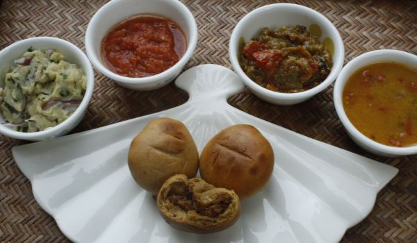
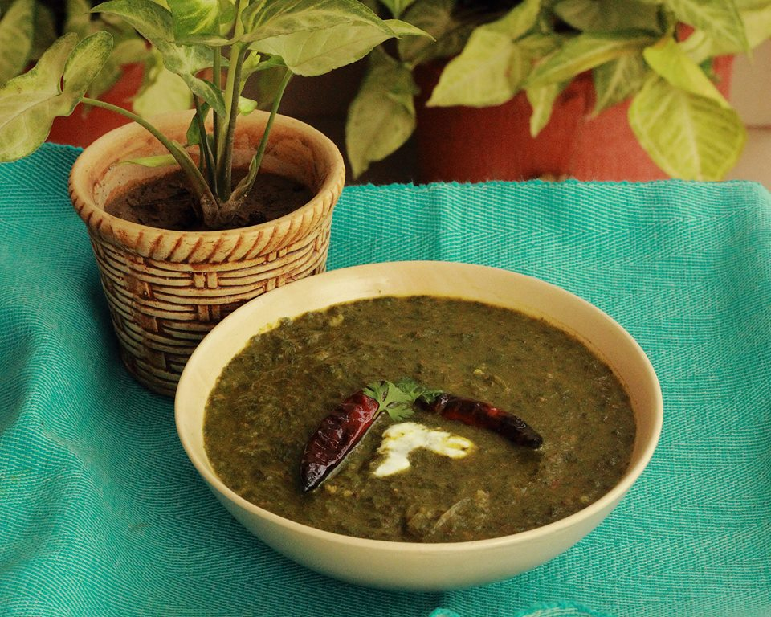
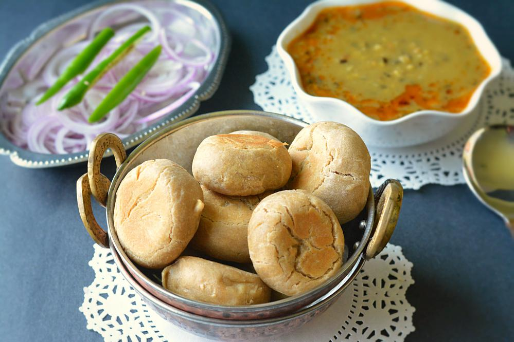
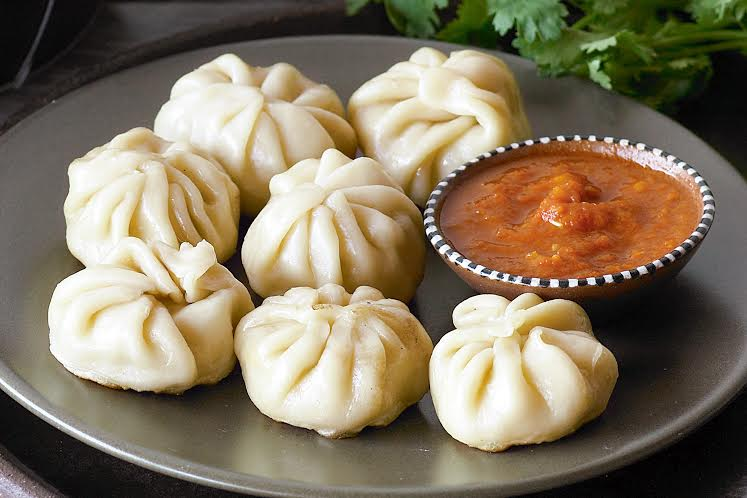

"Famous Fodie RIWAZ..."
29 States 29 Delicacies
WELCOME TO FOODIES WEBSITE...

Indian Food Culture
Indian food is different from rest of the world not only in taste but also in cooking methods. It reflects a perfect blend of various cultures and ages. Just like Indian culture, food in India has also been influenced by various civilizations, which have contributed their share in its overall development and the present form.
Foods of India are better known for its spiciness. Throughout India,be it North India or South India, spices are used generously in food. But one must not forget that every single spice used in Indian dishes carries some or the other nutritional as well as medicinal properties
1.Maharashtra – Misal Pav
Misal Pav – A water based curried preparation of cooked sprouted lentils, served with Pav and lemon wedges
2.Punjab – Makki Di Roti & Sarson Da Saag
‘Makki Roti’ is a corn meal Indian bread that tastes fabulous with ‘Sarson saag’ – mustard green and a glass of lassi.
3.West Bengal – Kosha Mangsho
A velvety gravy with juicy pieces of meat served with maida luchi (pooris)
4.Gujarat – Dhokla

Dhokla is a vegetarian made from a fermented batter of rice and split chickpeas. It is served as a snack with tangy chutneys
5.Kashmir – Rogan Josh
Rogan Josh is an aromatic lamb dish with flavours of browned onions, various spices and yoghurt. It is usually served with steamed rice.
6.Tamil nadu – Pongal
Veg Pongal is a rice lentil dish that is often prepared in south Indian homes as an offering to the goddess. But it is also a comfort food that is very easy to digest.
7.Assam – Papaya Khar
Khar is a completely off beat dish prepared out of the unusual combination of red rice, beaten pulses and raw papaya along with traditional Assamese spices.
8.Bihar – Litti Chowkha

Litti Chowkha is baked from wheat flour dough that is stuffed with a mixture of roasted gram flour, spices and lemon juice, and served with chokha (baked and pulped vegetables).
9.Himachal Pradesh – Dham
Dham is a dish prepared by cooking red kidney beans (rajma), green lentils (moong daal) and rice in curd. It is served teamed with mash daal, boor ki kari and sweet and sour sauce made from tamarind and jaggery (gur)
10.Andhra Pradesh – Pootha Rekulu
Pootharekulu literally means coated sheets of sugar preparation. Pootharekulu are made by making thin wrappers prepared from rice flour, pure ghee and lots of powdered sugar
11.Telangana – Biryani

Hyderabadi Biryani is a popular variety of Biryani. The Hyderabadi Biryani is so named as it is seen mainly in the city of Hyderabad, India. The blending of mughlai and Andhra cuisines in the kitchen of the Nizam (leader of the historical Hyderabad state), resulted in a dish called the Hyderabad Biryani.
12. Goa – Fish Curry
Goan cuisine consists of regional foods popular in Goa, an Indian state located along India's west coast on the shore of the Arabian Sea. Rice, seafood, coconut, vegetables, meat, pork and local spices are some of the main ingredients in Goan cuisine. The area is located in a tropical climate, which means that spices and flavors are intense. Use of kokum is another distinct feature. Goan food is considered incomplete without fish.
13. Uttarakhand – Kafuli

Cuisines of Uttarakhand are simple and made of locally grown ingredients. The cuisines don't have complex spices.[1] The two regions in Uttarakhand have different cuisines, so there are Garhwali Cuisines and Kumaoni Cuisines.
14. Tripura – Chakhwi
CHAKHWI IS A HEALTHY RECIPE THAT IS A TASTY MIX OF BAMBOO SHOOTS, JACK FRUIT AND PORK.
15. Manipur – Kangshoi
KANGSHOI IS A SOUPY STEW OF SEASONAL VEGETABLES, COARSELY CHOPPED ONIONS OR SPRING ONION, DRIED OR FRIED FISH PIECES AND WATER.
16. Meghalaya – Jadoh
JADOH IS RED HILL RICE COOKED WITH PORK PIECES. IT IS A KHASI VERSION OF BIRYANI.
17. Kerala – Appam

APPAM IS A TYPE OF PANCAKE MADE WITH FERMENTED RICE BATTER AND COCONUT MILK.
18. Madhya Pradesh – Bhutte Ka Kees
BHUTTE KA KEES IS A SPICY GRATED SWEETCORN DISH FROM THE LAND OF MAGICAL CHAATS, INDORE.
19. Rajasthan – Dal Baati Churma

DAL BATI CHURMA IS A TRADITIONAL RAJASTHANI TREAT WITH THE SPICY DAL WITH THE SWEET CHURMA ALONG WITH DEEP FRIED CRUNCHY BATIS.
20. Haryana – Bajre Ki Khichdi
BAJRE KI KHICHDI IS A PORRIDGE (KHICHDI) MADE OF COARSELY CRUSHED PEARL MILLET AND IS EATEN WITH PURE GHEE OR SESAME OIL.
21. Arunachal Pradesh – Thukpa
THUKPA IS BOILED NOODLES, FILTERED AND MIXED WITH VEGETABLES AND MEAT ITEMS.
22. Sikkim – Momos

MOMO IS A TYPE OF SOUTH ASIAN DUMPLING THAT IS SERVED WITH A CHILLI BASED DIP.
23. Karnataka – Bisi Bele Bath
BISI BELE BATH IS A DISH IN WHICH THE SAMBAR DAL AND RICE ARE COOKED TOGETHER WITH TAMARIND AND SPICE POWDERS.
24. Nagaland – Pork with Bamboo Shoots
PORK WITH BAMBOO SHOOTS IS SIMPLY A DISH THAT IS COOKED WITH DRY BAMBOO SHOOTS, LOADS OF CHILLIES AND HERBS, . THIS DISH TASTES HEAVENLY WITH BOILED RICE.
25. Mizoram – Misa Mash Poora
MISA MASH POORA IS A SEA FOOD DELICACY WITH ROASTED SHRIMPS THAT GET EVEN BETTER WITH A SQUEEZED LEMON
26. Odisha – Chenna Poda
CHHENA PODA IS THE QUINTESSENTIAL CHEESE DESSERT MADE WITH CHHENA.
27. Chhatisgarh – Chila
A CHILA IS A NORTH-INDIAN CREPE MADE OUT OF CHICKPEA FLOUR. YOU CAN HAVE YOUR CHILA WITH CHUTNEY OR ROLL IT AROUND A STUFFING LIKE TOFU CRUMBLE.
28. Jharkhand – Rugda
RUGDA ALSO KNOWN AS PHUTKA IN SOME AREAS OF JHARKHAND IS A VARIETY OF MUSHROOM. THE SUBZI TASTES GREAT WITH RICE OR POORI.
29. Uttar Pradesh – Kabab
KEBABS ARE SIMPLE TREATS MADE OF DEEP FRIED MINCED MEAT.